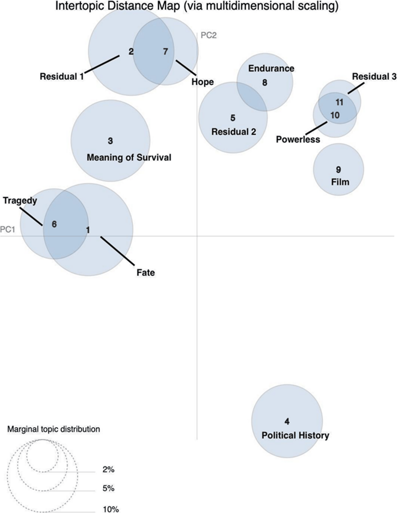

Mapping China’s Memories: Contested Histories and National Narratives in Social Media Reviews of Post-Mao Films
With Chandler Rosenberger. Published in International Journal of Politics, Culture, and Society (2026). Read the paper
How do ordinary Chinese viewers make sense of the traumatic history depicted in post-Mao films?
Drawing on large-scale Douban reviews of fifth-generation films, including Farewell My Concubine and To Live, we use seeded topic modeling to map distinct clusters of mentalities: the different ways ordinary viewers make sense of the upheavals of modern Chinese history alongside official narratives. The analysis pipeline is available on GitHub. This article grew out of my B.A. senior thesis (2024), for which I received Highest Honors in International and Global Studies.
Versions of this work were presented at Culture and Identity in East Asia: New Digital Methods, a colloquium I co-organized at Brandeis (2025); a joint UCLA–Korea University digital humanities conference (2026); and the ASA Annual Meeting (2026).

